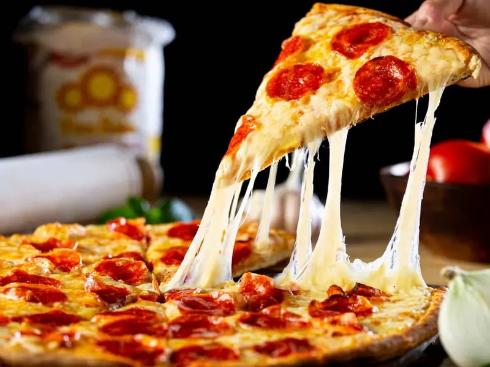

Recipe Pizza
Home

Descripción
La pizza es un plato de origen italiano, específicamente napolitano, que consiste en una masa plana, usualmente circular, horneada y cubierta con salsa de tomate, queso y otros ingredientes al gusto. Es un plato popular en todo el mundo, con diversas variantes y adaptaciones locales.
Ingredientes
- Harina 500 gr
- Sal 10 gr
- Levadura en polvo 1 sobre
- Azúcar 3 gr
- Aceite de olivo 40 gr
- Agua 300 ml
- Salsa de tomate preparada 200 gr
- Tomates cherry 1 caja
- Queso mozzarella rallado 400 gr
- Hojas de albahaca fresca 1 manojo
Pasos para la Elaboración
- Lávese las manos con agua y jabón
- Precaliente el horno a 375 ºF
- Reúna, ralle y mida todos los ingredientes antes de comenzar a preparar la receta.
- En un tazón mediano, mezcle 1 taza de harina, la levadura, el azúcar y el agua usando una cuchara.
- Incorpore gradualmente la otra taza de harina hasta formar una bola de masa
- Enharine una tabla de cortar o una superficie limpia. Coloque la bola de masa sobre la superficie, y luego, con las manos limpias, amase durante unos 5 minutos
- Rocíe un tazón con aceite antiadherente en aerosol. Ponga la masa en el tazón y cúbrala con un paño limpio. Coloque el tazón sobre la estufa mientras esté precalentando el horno (pero no en una hornilla encendida) y deje reposar durante 10 a 15 minutos; precalentar el horno hará que la estufa esté ligeramente caliente y ayudará a que la masa crezca
- Rocíe una bandeja para hornear de 12 x 16 pulgadas con aceite antiadherente en aerosol. Extienda la masa en una capa uniforme sobre la bandeja para hornear. Extienda la masa en una capa uniforme sobre la bandeja. Para una corteza más gruesa, use una bandeja más pequeña.
- Añada una capa fina de salsa marinara fácil de preparar del libro de cocina Eating Smart, Being Active Let's Cook!, dejando descubierta 1/2 pulgada de la orilla.
- Añada el queso rallado y los ingredientes para pizza. Tenga cuidado de no poner demasiados ingredientes, o se reblandecerá.
- Hornee aproximadamente durante 15 minutos, hasta que la orilla dore , y el queso se derrita y esté ligeramente tostado en algunas partes.
- Refrigere lo que sobre antes de 2 horas. Consuma en un plazo de 3 a 5 días.